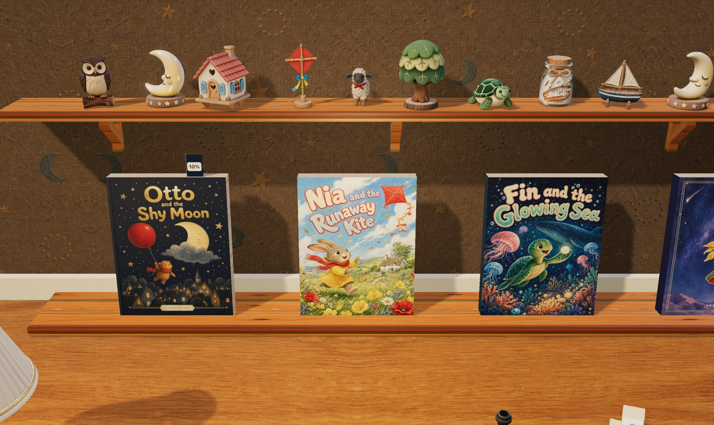

选 一 本 书
轻触书本，让故事从纸页里长出来。
翻开立体书，跟着红气球，去云朵后面说一声晚安。
✦ 点一本书，故事就开始了 ✦
点一句话，就从这里开始听
A NEW STORY, A NEW ADVENTURE
从你的电脑出发，去小朋友的想象里旅行。
书籍与阅读进度只保存在当前浏览器中，可在设置中备份。
MAKE YOURSELF AT HOME
WORDS FOR THIS LITTLE PAGE
FIND YOUR LITTLE CHAPTER
A NAME FOR YOUR STORY
读完每一页收获星星，在故事里找到藏起来的小物件。
书架上的每一个故事。
没有找到故事，换个名字试试。